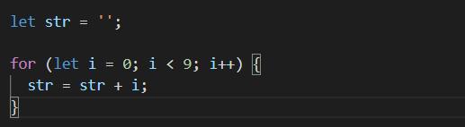
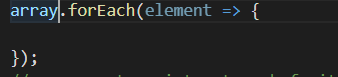
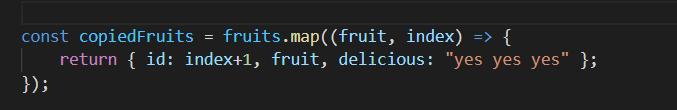

In Node Js we can use standart loops syntax which is used in a language like Java. The for statement creates a loop that consists of three optional expressions, enclosed in parentheses and separated by semicolons, followed by a statement (usually a block statement) to be executed in the loop.
Foreach() loops are great for going through arrays and utillizing the elements of the array. It uses an arrow function to ease the work. This creates a variable which stores one item at a time from the array and then executes the code in the curly braces for every item. Another way of using loops is with for...of syntax which is very simillar to foreach()
Map is another way to utillize an a loop. The map() method creates a new array populated with the results of calling a provided function on every element in the calling array. We can also add the current index of the item or the array we are calling map on.
